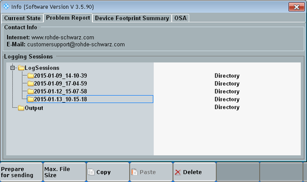

The "Problem Report" tab allows you to prepare collected logging information for problem reporting to Rohde & Schwarz.
If you encounter problems with your instrument, proceed as follows to send the generated log files to Rohde & Schwarz:
On the (soft-) front panel, press INFO to open the "Info" dialog box.
Select the "Problem Report" tab.
The tab shows a list of logging sessions.
If necessary, for example because of limitations in the electronic mail system, use the hotkey "Max. File Size" to adjust the maximum size of the compressed log files.
Select the directory of the session where the problem occurred. The date and time of the log session refer to the start of the instrument.
Press the hotkey "Prepare for sending".
The selected log files are packed into one or more compressed files located in folder Output.
Send the files to Rohde & Schwarz for analysis.
You can copy the files from folder Output to a USB memory stick, using the hotkeys "Copy" and "Paste".

The dialog provides the following hotkeys.
Stores the selected log file directory to one or more compressed files, located in the Output directory.
Sets a maximum file size for the compressed files resulting from the "Prepare for sending" action.
Copies the selected folder or file to the clipboard. This hotkey can be used for example to copy a compressed file located in the output folder.
Pastes the folder or file located in the clipboard to the selected folder.
Deletes the selected folder or file.